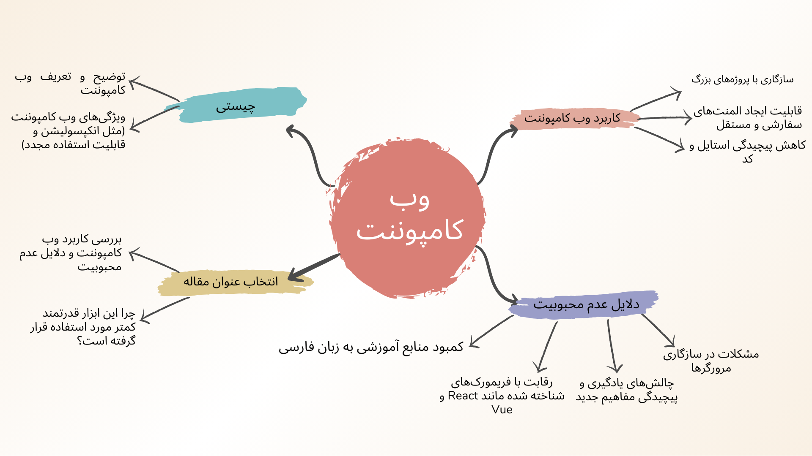

عنوان مقاله: بررسی نظام آموزش و پرورش کشور چین
نویسنده: محمد لطیف محبی دانشجویی ارشد روانشناسی تربیتی
تاریخ: اردیبهشت 1395
کلیدواژه ها: چین،نظام آموزش، برنامه ریزی، اصلاحات، ارتباط، سرمایه انسانی.مقدمهای بر نظام آموزشی چین
عنوان: بررسی نظام آموزش و پرورش چین
نکات کلیدی: آموزش در چین به عنوان پایه توسعهی اقتصادی و اجتماعی شناخته میشود و سرمایهگذاری کلان در این حوزه سبب رشد سریع کشور شده است.
اهداف اصلی: دسترسی همگانی، برنامهریزی بلندمدت، و ارتباط موثر بین آموزش، کار و صنعت.

پیشینه تاریخی و اصلاحات آموزشی
پیش از ۱۹۱۲: سیستم آموزشی تحت سلطنت بود.
پس از ۱۹۴۹: آموزش تحت تأثیر ایدئولوژی کمونیستی و سیستم شوروی تغییر کرد.
اصلاحات مدرن: از دهه ۱۹۹۰ اصلاحاتی در مدیریت، سرمایهگذاری، و شیوههای آموزشی اعمال شد که هدف آنها افزایش ارتباط دولت، جامعه و موسسات آموزشی بود.
ساختار و ویژگیهای اصلی نظام آموزشی
مقاطع آموزشی:
- پیشدبستانی (۳-۶ سال)، ابتدایی (۷-۱۲ سال)، و متوسطه با تمرکز بر دانش علمی و مهارتهای عملی.
- آموزش عالی با ورود از طریق آزمونهای ملی، شامل مقاطع کارشناسی، ارشد و دکتری.
- ویژگیها: تأکید بر آموزش عملی، مهارتآموزی و ارزشهای اجتماعی.
دستاوردها و سرمایهگذاریها
- دسترسی گسترده: تحصیلات ابتدایی تقریباً همگانی و رشد قابلتوجه در مقاطع عالی.
- تکنولوژی آموزشی: گسترش آموزش از راه دور و مهارتهای کامپیوتری. آمار ایران
- تبادل بینالمللی: افزایش همکاریها و اعزام دانشجو به خارج از کشور.
چالشها و اهداف آینده
چالشها: کمبود منابع در مناطق روستایی، نابرابری بین مناطق، و محدودیتهای آزادی آکادمیک. مانند:وجود کلاس های پر جمعیتی مثل 40 تا 50نفر
اهداف تا سال ۲۰۲۰: دستیابی به آموزش مدرن و همگانی، توسعه مهارتهای پیشرفته، و بهبود کیفیت آموزشی در سراسر کشور.
طرح مقاله من
- [منبع فارسی](https://www.roxo.ir/web-components)
- [web.dev](https://web.dev/articles/web-components-io-2019)
- [kinsta.com](https://kinsta.com/blog/web-components/)
- [mozilla.org](https://developer.mozilla.org/en-US/docs/Web/API/Web_components)
سخن را پخته میگویم، سخندان خوب میداند
که دانشمند
بیحاصل، به یک نادان نمیارزد
مرتضی عباسی زاده
سخن را پخته میگویم، سخندان خوب میداند
که دانشمند
بیحاصل، به یک نادان نمیارزد